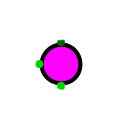
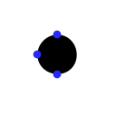

RGB LED
RGB LED
| 库： | 输入/输出 |
| 引入版本： | 2.1.3 |
| 外观： |   |
行为
RGB LED 组件通过三个独立的输入端口分别控制红色、绿色和蓝色三种发光通道。每个输入端口为 1 位信号：当对应输入为 1 时，相应颜色点亮；当输入为 0 时，该颜色熄灭。三种颜色可以同时点亮，其混合效果用于表示最终显示的颜色。
该组件用于模拟常见的三色发光二极管（RGB LED）。
引脚（假设组件朝西）
- 北侧边缘（输入，位宽为 1）
- 绿色输入：当该输入为 1 时，绿色通道点亮。
- 西侧边缘（输入，位宽为 1）
- 红色输入：当该输入为 1 时，红色通道点亮。
- 南侧边缘（输入，位宽为 1）
- 蓝色输入：当该输入为 1 时，蓝色通道点亮。
属性
当组件被选中或正在放置时，可使用方向键修改其 朝向
属性。
- 朝向
- 定义红色输入引脚所在的方向。
- 高电平点亮
-
若为
是
，则输入为 1 时 LED 点亮；若为否
，则输入为 0 时 LED 点亮。 - 标签
- 与该组件关联的标签文本。
- 标签位置
- 标签相对于组件的位置。
- 标签字体
- 用于绘制标签文本的字体。
- 标签颜色
- 绘制标签文本所使用的颜色。
- 标签可见
- 是否显示标签。
手形工具行为
无。
文本工具行为
可用于编辑与该组件关联的标签文本。